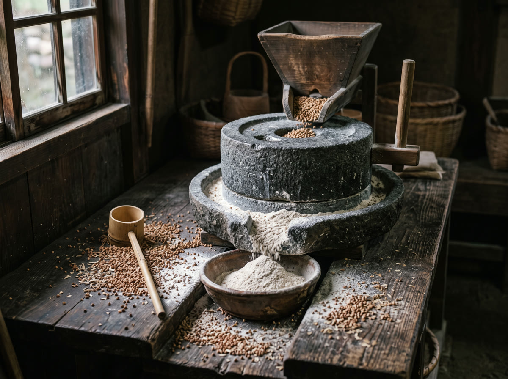
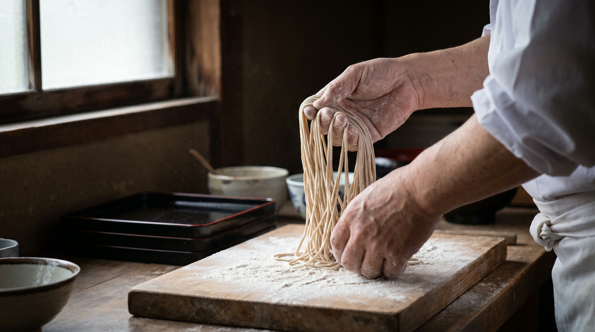

もりそば
900円 税込
まずはこの一枚から。粗挽きの香りと、辛口の返しを合わせた江戸前のつゆで。

毎朝、玄そばを石臼で挽くところから。
挽きたて・打ちたて・茹でたての一枚を。
本日の営業時間
11:00 – 21:00
通し営業です。ラストオーダーの時刻はお問い合わせください。
定休日
日生中央サピエに準じます
施設の休館日に準じます。年末年始は営業時間が変わります。
挽きたて・打ちたて・茹でたて。
その日の分だけを打つ店でなければ守れないことがあります。

産地から届いた玄そばを、開店前に石臼でゆっくりと挽きます。回転を上げれば早く挽けますが、摩擦熱で香りが飛んでしまう。手間はかかっても、この工程だけは変えられません。

水回しから切りまで、ていねいに。気温と湿度で加水量を変えるため、同じ日は二日とありません。その日いちばんの状態でお出しします。

本枯節と羅臼昆布でひいた出汁、板わさ、だし巻き玉子。一杯やってから蕎麦で締める——そんな使い方をしていただけるよう、地酒も少しずつ揃えています。
900円 税込
まずはこの一枚から。粗挽きの香りと、辛口の返しを合わせた江戸前のつゆで。

1,900円 税込
車海老二尾と季節の野菜を薄衣で。揚げたてを蕎麦と一緒にお出しします。

1,700円 税込
脂ののった鴨と焼き葱を熱いつゆで。寒くなるほど出数が増える一杯です。